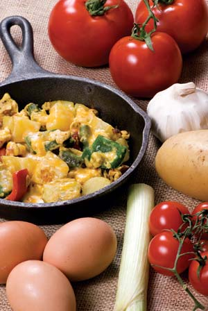
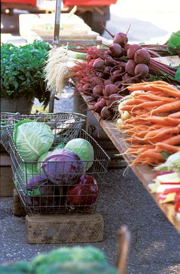
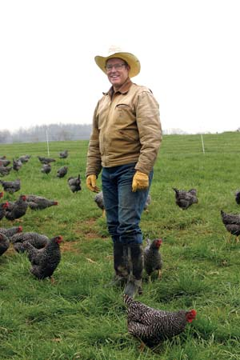

All fruits and vegetables are more abundant in some seasons than others, and although not everyone realizes it, the same is true for meat and eggs. As a farmer who sells directly to my customers, I think a lot about these seasonal cycles because getting supply to match demand is one of my biggest challenges. One of the best ways to even out the flow is to find customers who eat seasonally - buying extra at some times and not demanding seasonal products during the hard-to-produce times. Often, this means freezing and preserving for later use rather than eating an abundance of tomatoes or beef right now.
When it happens, this synergism between season, farmer and patron is a dance that honors the natural ebb and flow of production. Cyclical menus stimulate an awe and respect for local food connections. And such conscious planning is good for pocketbooks - of both farmer and patron.
Tremendous money and effort is expended maintaining production anti-seasonally, but meat is best in certain seasons, just as produce is. When are the deer fattest in your area? Going into winter. Forage-fattened beef is also best in the fall. Once the frost has killed flies and sweetened the grass, cows are more comfortable than at any other time of the year. They naturally ramp up their forage intake and back fat in fall to get through the lean, hard winter. On the other hand, spring is when chickens lay enough eggs so there will be extra for raising broilers. Seasonally speaking, it makes sense to eat chicken in the summer and beef in winter.
When buying meat from local farmers, you’ll find that eating the whole animal is a related issue. Remember that a chicken consists of something besides a boneless, skinless breast. The only way those can be offered in the supermarket is because the industry grinds and reconstitutes the rest into chicken franks, lunch meat and McNuggets, using low-wage labor and high volume to justify the sophisticated machinery. In the supermarket, boneless, skinless chicken breasts necessarily require an industrial approach to food preparation, but at home, it’s a different story. You can eat the chicken breast, but also cook the rest of the chicken for casseroles, and freeze the broth for stock.
The same is true of beef. I once had a chef ask me for 200 beef loins a year to use for steaks in his restaurant. My jaw dropped, and I asked him: “Do you know how much chuck roast that is?” Less than half of a cow can be used for top-end steaks. The rest is chuck roast and ground beef, and that meat has to go somewhere. Steakhouses only have been possible in our culture since the advent of the hamburger joint.
As an example of how deep seasonal cycles can go, let me describe the egg production cycle. It starts when little chicks hatch and begin growing. These pullets (young female chickens) begin laying at about their 20th week. At first, they lay what are called pullet eggs, which are very small. Then the size increases, so that within about a month, more than half their eggs are large.
The birds lay for roughly a year before molting. That’s when they lose feathers, stop laying, and essentially go through a two to four week dormancy period. Then, sporting a new suit of feathers and looking rejuvenated following this rest period, they begin another production cycle. As with nearly all biological systems, the egg production cycle follows an escalating curve early on, plateaus for a couple of months, then gradually drops during the molting period.
That’s the bird’s natural physiological production cycle. But other factors play a key role in production, which, at its plateau, can be five to seven eggs per week. One factor is temperature. A chicken, being a bird, has a high metabolism. In cold weather, a bird uses all the calories it can ingest just to keep warm, so there aren’t enough left to produce an egg. The second factor is day length. Light stimulates the glands that secrete hormones that make the hen lay eggs. As days get shorter, production wanes. On our farm, December 21 is a red letter day because it’s the winter solstice, the shortest day of the year. After that, day length and egg production increase. Egg production then drops off in the fall when day length is shorter.
In a natural setting, peak production is in the spring and the lowest is in the fall. But culturally, our demand for eggs peaks in the fall and wanes in the spring. We call it the “going back to school” syndrome. It may have something to do with the body’s desire for more protein heading into winter. Who knows? But every per capita consumption chart shows a curve that peaks in November and plummets in the spring, exactly counter to the normal production cycle of a chicken.
So what’s a farmer to do? The industry uses lights to stimulate off-season production. I shy away from this procedure because it extracts a heavier toll on the birds that I think might affect nutritional egg quality. We use hoop houses to keep the birds warm in cold weather. But no matter what we do, we’re always short of eggs in the fall and have plenty in the spring. Because fall is when beef and pork are best, we encourage folks to eat more meat in the fall and lay off the eggs; then eat more eggs in the spring.
When we first began selling eggs to gourmet chefs, I would apologize for the quality of the eggs in the winter because we couldn’t keep the yolk color up when fresh grass wasn’t available. Then, during one of these conversations, the chef interrupted me and said: “Oh, it’s OK. In chef’s school in Switzerland we had special menus for April eggs, August eggs and December eggs as they changed through the seasons. Some have better yolks and some have better whites, so you concentrate on recipes that capitalize on the particular quality of that month’s eggs.”
I stood there flabbergasted. I’ve gained a new respect for cultures that honor their heritage cuisine.
Of course, produce follows seasonal cycles, too. Every year, right before frost, tomatoes rev into high gear and pump out masses of sweet, gorgeous orbs. But instead of local folks jumping on this last gift of summer and canning all the excess for winter, the industry - including the organic industry - concentrates on how to make sure fresh tomatoes are on the supermarket shelves in January, even when that requires shipping them in from 2,000 miles away. The local tomato flood gets composted, fed to pigs or just thrown out in heaps. What a waste!
If all the effort expended to get fresh tomatoes on supermarket shelves in January in Portland, Maine, was invested into fully utilizing the late August tomato flood, it would revolutionize our food system. Not only would it improve our nutrition, it would recycle dollars into our communities, and free us individually and collectively from far-away food dependency. In many cases, it might be the difference between local farmers making enough to get by, and making enough to romance the next generation into farming. When I suggest such a simple solution to nationwide problems, the conventional culture laughs me off as old-fashioned. But, in fact, preserving more of our fruits and vegetables would be remarkably easy to do.
The whole culture of eating food when it’s in season and laying by the surplus for later use is such a part of my family life that it’s difficult to explain to people whose umbilical cords are tied to the supermarket. But let me describe what’s routine in my family - and also was for most people until a couple of decades ago.
First, we have a couple of chest freezers. These are primarily for meat and poultry, and because I can’t live without ice cream. We also freeze quarts of blackberries and strawberries, which keeps them from getting mushy. When corn is in season, we cut it off the cob and freeze it on cookie sheets, then crumple it into plastic bags. When we need some, we just open the bag in the freezer and scoop out what we want.
We also have a pantry. We can about 600 to 800 quarts of food per year - with modern pressure canners it doesn’t take that long and, once sealed, storing this food requires no energy. When tomatoes are rolling in from the garden, we make juice and can tomatoes. We also make salsa, ketchup and tomato paste. Each year, we buy bushels of apples from an orchard and make our own applesauce. When the grapes ripen in late September, we pull out the juicer and begin canning our juice concentrate. We cut it with half water to drink. The elderberries along the river are great for making jelly, so we reserve grape juice for drinking.
When cabbages are ready, we have a couple of 10-gallon crocks for making sauerkraut. Later in the season, when cucumbers are pouring in, we reuse the crocks for making pickles. (My wife, Teresa, makes fantastic sweet pickles.)
Our basement serves as a root cellar for fall vegetables and root crops. In November, the basement is full of butternut squash, sweet potatoes, white potatoes and cushaw squash. We lay mulch over late carrots in the garden and they become sweeter and sweeter as winter progresses. Whenever we want some, we get a handful fresh out of the ground.
Laying hens are only really productive for two years. At the end of that time, we dress them and cook them in a huge roasting pan. We pick the meat off, cut it up into bite-size chunks, and either can it or freeze it. Then, when it’s 5 p.m. and supper panic sets in, Chicken ala King is only a few minutes away. That precooked, ready-to-go canned or frozen meat is about as handy as it gets.
This laying by behavior is considered so normal in my family that, I confess, we find it somewhat odd when customers who buy our meat and poultry say they don’t have a freezer. And even more so when we talk to people who have never canned or eaten home-canned food. We all choose our routines. Ours is to lay food by, and enjoy eating out of the larder all winter.
There’s a simple way to synchronize your eating with seasons and availability. Make a list of products available in your region and note the normal harvest months for each. It’s a wonderfully simple way to express the ebb and flow of the seasons. Then, preserve abundant food for when it’s in short supply. Here are a few more tips for getting started:
|
 ISTOCKPHOTO/THOMAS PERKINS What’s for breakfast? If it’s spring, you might choose eggs-that’s when chickens naturally begin laying more. |
 LYNN KARLIN When cabbage is in season, consider stocking up and preserving some as delicious, homemade sauerkraut. |
 RICHARD LORD/ELLWOOD THOMPSON’S LOCAL MARKET Author Joel Salatin on his farm in Virginia. |